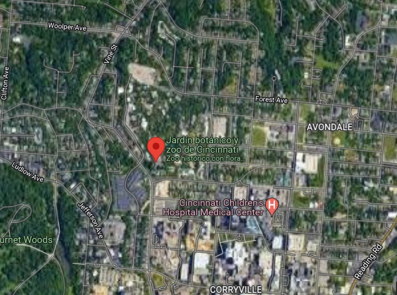
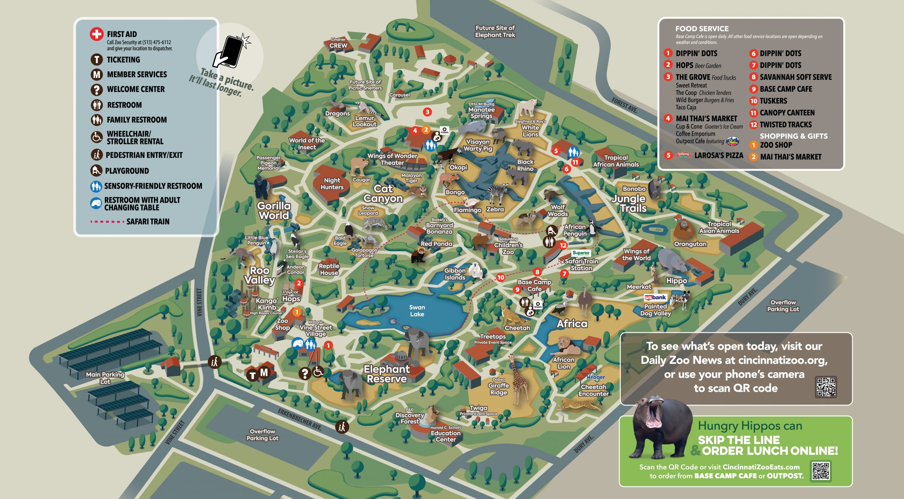

Ubicado en las cercanías de Avondale, el parque originalmente se extendía por 260.000 m² en el centro de la ciudad y desde entonces ha adquirido nuevos espacios.

El Zoológico y Jardín Botánico de Cincinnati está ubicado en
3400 Vine St., Cincinnati, Ohio 45220 . También puede tomar las rutas de metro 1, 46, 38x, 78 o subirse a una bicicleta roja.
¡El intercambio I-71 Martin Luther King ya está abierto! Use esto desde la salida 3 de la I-71. ¿Viene de la I-75? Intente salir en Hopple Street.
